— Lineage II Interlude
— Subclass Acumulativas (Base+3) (tercera clase en una)
— NPC Full Buff / Slot de buff: 32+4
— Comando .watch activado
— Comando .skin activado (Skins visuales, no otorgarán estadísticas)
— Forma de equiparse: Event/Glittering Medals; Todo caerá en las zonas de farmeo PVP/NO PVP
— Heroes cada 7 días; Olympiadas de 21:00hs a 00:00hs GMT-3
— Barakiel convierte en nobles a la party que le da el ultimo hit. (Respawn 24-28hs)
Amnesia es un proyecto PVP pensado para revivir aquellos momentos cuando empezamos a jugar Lineage II pero también entendemos que los tiempos de hoy no son los mismo de antes, por lo que no requerirá demasiado tiempo el equiparse.
| Experiencia | x50 |
| Skill Point | x50 |
| Adena | x50 |
| Drop | x1 |
Los items son seguros hasta +4. El máximo de enchant es +16.
— Chances de suceso en los encantamientos en armas:
| Enchant | 4 | 5 | 6 | 7 | 8 | 9 | 10 | 11 | 12 | 13 | 14 | 15 | 16 |
| Enchant Weapon | 100 | 95 | 80 | 70 | 65 | 50 | 45 | 40 | 35 | 30 | 25 | 20 | 15 |
| Blessed Enchant Weapon | 100 | 100 | 100 | 90 | 80 | 70 | 60 | 60 | 50 | 40 | 30 | 30 | 25 |
— Chances de suceso en los encantamientos en Armaduras y joyas:
| Enchant | 4 | 5 | 6 | 7 | 8 | 9 | 10 | 11 | 12 | 13 | 14 | 15 | 16 |
| Enchant Armor | 100 | 95 | 80 | 70 | 65 | 50 | 45 | 40 | 35 | 30 | 25 | 20 | 15 |
| Blessed Enchant Armor | 100 | 100 | 100 | 90 | 80 | 70 | 60 | 60 | 50 | 40 | 30 | 30 | 25 |
— Durante la duración de un duelo en Olimpiadas, todos los items con mayor encantamiento se reducen a +6.
Los eventos TVT estarán disponibles todos los días en sus determinados horarios.
— Por ganar, obtendras 5 Event coins, por perder 2 Event coins. Recuerda que debes tener al menos una kill para obtener el premio. Si sales entre los top killers (primeros tres) obtendras coins extra.
— Además, por cada kill que hagas durante el evento obtendrás un Amnesia coin
— Los horarios de Lunes a Viernes serán 10am,12pm,16pm,18pm,20pm,21pm,00am,02am
— Los horarios de Sábados y Domingos serán 10am,12pm,14pm,16pm,18pm,20pm,21pm,00am,02am,04am
Se pensó un sistema en donde haya un PVP constante entre los jugadores, diversos mapas y enemigos con recompensas.
— Es una zona rotativa, es decir cada cierto tiempo cambiará a un nuevo área.
— Es una zona PVP/FARM, por lo que tendrás un PVP constante para dominar esa zona.
— Cada vez que haya un cambio de zona, aparecerá un raid boss custom Aleatorio.
Esta zona aparecera todos los días durante una solamente una hora a las 17:00hs y a las 22:30
— En la Dark Dungeon podras perder Event High Medals, cuidado!
— En esta zona FARM/PVP al matar a otros jugadores les robaras un 30% de las Event Medal High que tenga en el inventario.
— CUIDADO, si un jugador te mata dentro de esta zona, te robará un 30% de las Event Medal High que tengas en el inventario en ese momento.
— Si guardas los objetos en el warehouse antes de viajar a esta zona estarán a salvo. Recomendamos revisar esto antes de viajar a esta zona.
Esta zona aparece únicamente los sábados y domingos en su determinado horario.
— La Infernal Dungeon será la zona más TOP del servidor, con diversos enemigos y mejores tesoros.
— Es una zona PVP/FARM, muy similar a la dungeon zone pero con la diferencia es que solo está los fin de semanas y cuenta con mejores recompensas.
— A la mitad de la duración de la Infernal Dungeon, aparecerá un Raid Boss.
— Será un mapa grande, para que todos puedan participar de esta dungeon.
Además de las Dungeon Zones, habrán zonas no flag, con drop un poco menor para quienes no quieran un constante PVP.
La manera principal de equiparse será con Event Medals y Glittering Medals que se conseguiran en las Dungeon Zones o en las zonas de farmeo no flag.
Además, la Adena y la Ancient Adena serán objetos escenciales para el equipamiento.
Los raid Boss Customs además de su drop, darán "Raid Coin"
Todos los items costarán principalmente Event Medals y Glittering Medals, pudiendo algunos pedir algo extra, como Ancient Adena, Adena, Raid Coin
— El shop vende todos los items, no es necesario craftear ni hacer quests.
Al shop se le agregaron "Chests" en las secciones grado A y S
— Es una manera más económica para equiparse, pero contemplando la suerte.
— Se agregaron cinco tipos de chests (Armor A/S, Weapon A/S, Jewels RB)
— Estos chests se encuentran en su respectiva sección de compra en el shop, y podrán dar cualquier item aleatorio dependiendo el tipo de cofre.
— Los chests tienen un costo mucho menor que la compra directa del item.
Esta nueva moneda fue agregada para una mayor economia y lo pediran los items top del servidor.
— Se conseguiran principalmente por cada pvp realizado que ganes.
— Además, cada kill que obtengas en los TvT te dará uno de estos coins, es decir si tienes 10 kills obtendras 10 amnesia coins.
— Al asesinar a un jugador de otro clan con el que estes en guerra, obtendrás un coin extra.
— Si un jugador abusa de un bug, se crea cuentas y las mata o alguna manera anti-competitiva para obtener estos coins sera baneado sin excepción.
Implementamos un sistema de "Souls", el que te permitirá adquirir nuevos skills a elección personal, para así incrementar la estadísticas de tu personaje.
— Solo podrás tener hasta un máximo de 5 Souls por personaje.
— Cada Soul se podrá a subir hasta lv.3, cada nivel incrementará las estadísticas del mismo.
— Los souls serán tradeables
| Soul | Max Lv. | Estadísticas | |
| 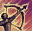 | Soul Guidance | 3 | |
| 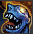 | Soul Quickness | 3 | |
| 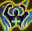 | Soul Health | 3 | |
| 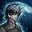 | Soul Mana | 3 | |
| 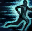 | Soul Wind Walk | 3 | |
| 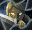 | Soul Rate | 3 | |
| 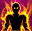 | Soul Power | 3 | |
| 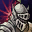 | Soul Shield | 3 | |
| 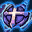 | Soul Magic Barrier | 3 | |
| 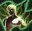 | Soul Agility | 3 |
— Los Souls Coins se podrán conseguir en la Dungeon Zone con una chance moderada o en la Infernal Dungeon Zone con una chance alta
— También los podrás conseguir en las zonas farm no flag, pero tendrán una chance baja
— Cuando tengas la cantidad requerida de Souls Coins, los podrás intercambiar por un "Soul Book", y así obtener el skill pasivo que desees. (Máximo 5 veces)
El equipamiento del servidor será fijo, es decir no habrán mejores sets que los que ya están en el servidor.
El equipamiento top del servidor será:
— Dinasty
— En armas: Infinity
— En joyas: Joyas RB
Hay diversos tattoos que aumentarán tus estadísticas dependiendo cual elijas:
| Tattoo | Estadística | |
| Tattoo of Might | +5% P.atk | |
| 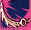 | Tattoo of Focus | +5% Crt. Rate |
| 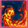 | Tattoo of Blessed Body | +5% HP |
| 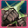 | Tattoo of Haste | +5% Atk Speed |
| 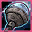 | Tattoo of Acumen | +5% Casting Speed |
| 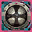 | Tattoo of Shield | +5% P. def |
| 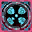 | Tattoo of Magic Barrier | +10% M. def |
| 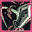 | Tattoo of Agility | +5% Evasión |
| 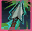 | Tattoo of Guidance | +5% Accuracy |
| 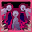 | Tattoo of Revenge | +5% Reflect Physical Damage |
| 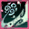 | Tattoo of Wind Walk | +5% Speed |
| 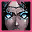 | Tattoo of Empower | +5% M.Atk |
— Solo se puede tener uno equipado a la vez
— Se consigue por el shop con farmeo, únicamente se venderán por caja, esto quiere decir que podrá tocarte cualquier tattoo.
Las armas TOP del servidor serán las Infinity
— Tendrán mas stats que las grado S
— Se conseguirán por shop, serán tradeables y no es necesario ser Hero para equiparselas
Este viejo comerciante aparecera unicamente los dias domingos durante todo el día.
— El buscará tus Event Medals High, que se conseguiran en la Infernal Dungeon Zone (menor cantidad) o la Dark Dungeon (en mayor cantidad)
— Cada miercoles y domingo, lo encontrarás en Giran con distintas ofertas a cambio de las Event Medals High, pero pueden haber excepciones e intercambiar por otros items.
— Sub Acumulativas base +3
— Los skilles se van acumulando subclass en subclass
— 3ra class en una sola sub (base para olimpiadas)
— Al realizar una Subclass NO cambia la Skin del personaje
— Se puede Switchear las Sub Classes
— Cancelar una Sub Class tiene un costo de 10 DC
— Sub Class sin penalización de diferentes Razas
— Subclass de Overlord/Warsmith Habilitadas
— Skills iguales se reemplazan entre si, queda siempre el de mayor nivel
— Pasivas Acumulables, excepto light/heavy/weapon, queda la de mayor nivel
— Frenzy y Guts se reemplazan entre sí como lo es retail
— Zealot y Angelic se reemplazan entre sí, modificación personal
— Los skill totems de la class Tyrant pueden ser utilizados con cualquier weapon
— Skill Recharge sin restricción de class
— Surrender se reemplaza con Mass Surrender
— Los desbuffs de cancel skill, reintegra los buffs pasado los 30 segundos de su efecto
— Augment Celestial Shield desactivado pero in game está el argu
— Se redujo considerablemente el tiempo de duración de cada Desbuff
— Slots de clan: 30
— La guerra de clanes está activada. Recompensas al asesinar a la war.
— Clan full skills lv.8 para aquellos clanes/cp que contengan +10 jugadores con distintas IPs activos. Contactarse con la administración vía facebook
— Los asedios serán todos los domingos de 18hs a 20hs
— La corona del lider otorgará +1 STR/INT/WIT/DEX/CON.
— La circlet de miembros otorgará +1 STR/INT/CON
Buscamos la transparencia y la igualdad para todos los jugadores del Amnesia, que no hayan dudas ni sospechas por parte de la lealtad de la administración hacia el servidor, por lo que implementamos un comando para poder ver el inventario,skills,stats y warehouse del personaje que desees en el momento que quieras.
— El comando es: .watch
— Deberás targetear al jugador que desees analizar y escribir el comando en el chat.
Creamos un menú para facilitar ciertas cuestiones y mejorar la experiencia de juego.
— El comando es .menu
— Desde aquí podrás bloquear exp,buff,trades,wisp.
— Además, tendrás para seleccionar "Auto Potions", ya sea de mana,cp o mp
— También tendrás una opción "Repair" que sirve para "desbuguear" tu pj en caso de tener algun error.
Implementamos una gran variedad de skins visuales que no darán estadísticas y podrás combinarlos como desees.
— El comando es .skin
— Los accesorios no darán ninguna ventaja en estadísticas, únicamente cambiara el aspecto visual
— Podrás probarlos antes de comprarlos en el mismo comando con la opción "Try"
— Se vende el "Traje" y la "Máscara" separados para que lo combines como más te guste.
—La corona de hero otorgará +1 STR/INT/WIT/DEX/CON.
— El status Heroe se consigue únicamente por olympiadas
— Periodo cada 14 días
— Empieza a las 21:00 y termina a las 23:00 (GMT-3)
— Lugar de registro: Ciudad de Giran
— Status enchant max +6 (En caso de ser mas alto, se nivelaran los stats a +6)
— Olympiadas custom (Algunos buffs acorde al personaje)
— Los buffs de guerreros serán: Wind Walk, Shield, Magic Barrier, Might, Haste, Blessed Body, Focus, Death Whisper, Berserker, Song of Earth, Song of Warding, Song of Wind, Song of Vitality, Dance of Warrior, Dance of Fury
— Los buffs de magos serán: Wind Walk, Shield, Magic Barrier, Empower, Acumen, Blessed Body, Wild Magic, Berserker, Song of Earth, Song of Warding, Song of Wind, Song of Vitality, Dance of the Mystic, Dance of Concentration
— Ningun tipo de pociones esta activada.
— Secret Book of Giants por Olympiadas
— Requisito para salir heroe: 10 peleas mínimo, al menos 1 ganada y estar primero en el ranking.
— Las olympiadas serán de martes a domingos. Los lunes NO habran olys.